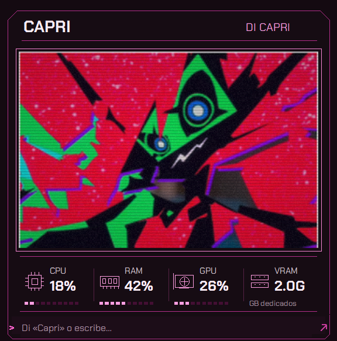

11
TU ESCRITORIO
TU PC A LA VISTA.
TUS AVISOS A TIEMPO.
Recursos junto al visor.
Recordatorios para lo que no quieres olvidar.


Monitor opcional y agenda de avisos guardados.
PRUEBA ESTA FRASECapri, recuérdame en 25 minutos tomar agua.
Capri debe estar abierta para entregar los avisos